library(tidyverse)
library(juanr)
library(gapminder)
library(broom)
library(modelsummary)
library(stargazer)
theme_set(theme_light())06-models
Load libraries:
I’m gonna look at the elections dataset, and I’ll create a dummy variable that tells me who won each county:
elections = elections |>
# make vote share a percent instead of proportion
mutate(per_dem_2020 = per_dem_2020 * 100,
per_gop_2020 = per_gop_2020 * 100) |>
# created a binary DV
mutate(dems_win_20 = ifelse(per_dem_2020 > per_gop_2020, 1, 0)) |>
# make income in tens of thousands of dollars
mutate(hh_income = hh_income / 10000)
elections |>
select(name, state, census_region, per_dem_2020, dems_win_20, black, hh_income, travel_time)# A tibble: 3,152 × 8
name state census_region per_dem_2020 dems_win_20 black hh_income
<chr> <chr> <chr> <dbl> <dbl> <dbl> <dbl>
1 Autauga County AL South 27.0 0 18.4 5.37
2 Baldwin County AL South 22.4 0 9.5 5.02
3 Barbour County AL South 45.8 0 47.6 3.29
4 Bibb County AL South 20.7 0 22.1 3.64
5 Blount County AL South 9.57 0 1.8 4.41
6 Bullock County AL South 74.7 1 69.9 3.20
7 Butler County AL South 41.8 0 43.6 2.99
8 Calhoun County AL South 29.8 0 20.9 4.00
9 Chambers County AL South 41.6 0 39.1 3.24
10 Cherokee County AL South 13.2 0 4.5 3.49
# ℹ 3,142 more rows
# ℹ 1 more variable: travel_time <dbl>I’ll fit three models: a model with all linear terms; a model with an interaction; a logit model.
mod_ols = lm(per_dem_2020 ~ black + travel_time + hh_income + census_region,
data = elections)
mod_inter = lm(per_dem_2020 ~ black + travel_time + hh_income +
census_region + black * census_region,
data = elections)
mod_logit = glm(dems_win_20 ~ black + travel_time + hh_income + census_region,
data = elections, family = binomial(link = "logit"))I like using broom::tidy to look at output since it converts output to a table:
tidy(mod_ols)# A tibble: 7 × 5
term estimate std.error statistic p.value
<chr> <dbl> <dbl> <dbl> <dbl>
1 (Intercept) 10.9 1.19 9.17 8.29e-20
2 black 0.753 0.0169 44.5 0
3 travel_time -0.0901 0.0434 -2.08 3.78e- 2
4 hh_income 4.07 0.195 20.9 1.58e-90
5 census_regionNortheast 11.8 0.900 13.1 4.62e-38
6 census_regionSouth -6.67 0.563 -11.9 9.03e-32
7 census_regionWest 7.62 0.678 11.2 1.02e-28I can manipulate table however I want, for example, which estimates are statistically significant at \(p < .05\)?
tidy(mod_ols) |>
filter(p.value < .05)# A tibble: 7 × 5
term estimate std.error statistic p.value
<chr> <dbl> <dbl> <dbl> <dbl>
1 (Intercept) 10.9 1.19 9.17 8.29e-20
2 black 0.753 0.0169 44.5 0
3 travel_time -0.0901 0.0434 -2.08 3.78e- 2
4 hh_income 4.07 0.195 20.9 1.58e-90
5 census_regionNortheast 11.8 0.900 13.1 4.62e-38
6 census_regionSouth -6.67 0.563 -11.9 9.03e-32
7 census_regionWest 7.62 0.678 11.2 1.02e-28A useful tip in these cases is to create a variable dictionary, with the “dirty” variable name and the “clean” one you want to use:
dict = tribble(~dirty, ~clean,
"(Intercept)", "Intercept",
"black", "Black % of population",
"travel_time", "Average commute time to work",
"hh_income", "Median household income",
"census_regionNortheast", "Northeast",
"census_regionSouth", "South",
"census_regionWest", "West",
"black:census_regionNortheast", "Black % X Northeast",
"black:census_regionSouth", "Black % X South",
"black:census_regionWest", "Black % X West")I can then use this dictionary to merge into my model output and get clean labels:
mod_inter |>
tidy() |>
left_join(dict, by = c("term" = "dirty"))# A tibble: 10 × 6
term estimate std.error statistic p.value clean
<chr> <dbl> <dbl> <dbl> <dbl> <chr>
1 (Intercept) 11.0 1.20 9.23 5.02e-20 Intercept
2 black 1.28 0.0760 16.9 3.26e-61 Black % o…
3 travel_time -0.131 0.0430 -3.04 2.40e- 3 Average c…
4 hh_income 3.94 0.193 20.4 3.95e-87 Median ho…
5 census_regionNortheast 12.2 1.09 11.3 6.00e-29 Northeast
6 census_regionSouth -4.55 0.613 -7.43 1.43e-13 South
7 census_regionWest 6.05 0.817 7.40 1.71e-13 West
8 black:census_regionNortheast -0.327 0.133 -2.47 1.37e- 2 Black % X…
9 black:census_regionSouth -0.569 0.0779 -7.31 3.35e-13 Black % X…
10 black:census_regionWest 1.36 0.288 4.73 2.29e- 6 Black % X…Displaying model results: the table
The table is the classic way. modelsummary is nice for this. Need a list of models to feed the function. Also very “customizable.” with what statistics to report.
models = list("OLS" = mod_ols,
"Interaction model" = mod_inter,
"Logit model" = mod_logit)
modelsummary(models, stars = TRUE, gof_map = "nobs")| OLS | Interaction model | Logit model | |
|---|---|---|---|
| (Intercept) | 10.913*** | 11.041*** | −5.161*** |
| (1.190) | (1.197) | (0.327) | |
| black | 0.753*** | 1.283*** | 0.126*** |
| (0.017) | (0.076) | (0.006) | |
| travel_time | −0.090* | −0.131** | −0.071*** |
| (0.043) | (0.043) | (0.013) | |
| hh_income | 4.075*** | 3.943*** | 0.765*** |
| (0.195) | (0.193) | (0.055) | |
| census_regionNortheast | 11.768*** | 12.241*** | 1.941*** |
| (0.900) | (1.085) | (0.203) | |
| census_regionSouth | −6.674*** | −4.550*** | −1.352*** |
| (0.563) | (0.613) | (0.218) | |
| census_regionWest | 7.616*** | 6.046*** | 1.742*** |
| (0.678) | (0.817) | (0.167) | |
| black × census_regionNortheast | −0.327* | ||
| (0.133) | |||
| black × census_regionSouth | −0.569*** | ||
| (0.078) | |||
| black × census_regionWest | 1.361*** | ||
| (0.288) | |||
| Num.Obs. | 3111 | 3111 | 3111 |
| + p < 0.1, * p < 0.05, ** p < 0.01, *** p < 0.001 |
You can also feed it clean variable names from your dictionary using the coef_map argument. A nice trick here is that it accepts a named vector, and that deframe will convert a dataframe t a named vector:
named_coefs = deframe(dict)
modelsummary(models, stars = TRUE, gof_map = "nobs", coef_map = named_coefs)| OLS | Interaction model | Logit model | |
|---|---|---|---|
| Intercept | 10.913*** | 11.041*** | −5.161*** |
| (1.190) | (1.197) | (0.327) | |
| Black % of population | 0.753*** | 1.283*** | 0.126*** |
| (0.017) | (0.076) | (0.006) | |
| Average commute time to work | −0.090* | −0.131** | −0.071*** |
| (0.043) | (0.043) | (0.013) | |
| Median household income | 4.075*** | 3.943*** | 0.765*** |
| (0.195) | (0.193) | (0.055) | |
| Northeast | 11.768*** | 12.241*** | 1.941*** |
| (0.900) | (1.085) | (0.203) | |
| South | −6.674*** | −4.550*** | −1.352*** |
| (0.563) | (0.613) | (0.218) | |
| West | 7.616*** | 6.046*** | 1.742*** |
| (0.678) | (0.817) | (0.167) | |
| Black % X Northeast | −0.327* | ||
| (0.133) | |||
| Black % X South | −0.569*** | ||
| (0.078) | |||
| Black % X West | 1.361*** | ||
| (0.288) | |||
| Num.Obs. | 3111 | 3111 | 3111 |
| + p < 0.1, * p < 0.05, ** p < 0.01, *** p < 0.001 |
Displaying model results: coefficient plot
We can display coefficients in a plot using the geom_pointrange geometry. Here’s another situation where tidy() is useful:
plot_model = tidy(mod_ols, conf.int = TRUE) |> left_join(dict, by = c("term" = "dirty"))
ggplot(plot_model, aes(y = clean, x = estimate, xmin = conf.low, xmax = conf.high)) +
geom_pointrange() +
# add vertical line at zero
geom_vline(xintercept = 0, lty = 2, color = "red") +
theme_light()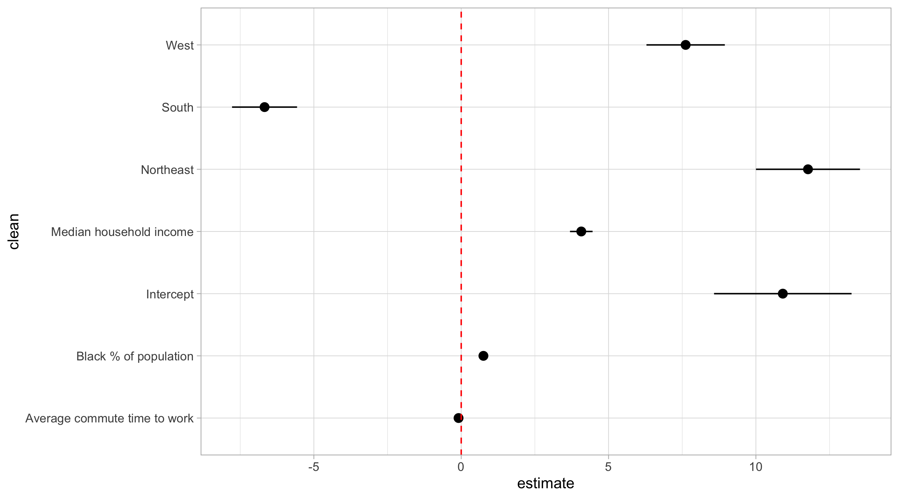
These plots are very hard to get right. The problem is that the explanatory variables are all on different scales, so they make the coefficients hard to see. All of the coefficients above are \(p < .05\), but it doesn’t look like it.
One thing to do is drop the (giant) intercept:
plot_model = tidy(mod_ols, conf.int = TRUE) |>
filter(term != "(Intercept)")
ggplot(plot_model, aes(y = term, x = estimate, xmin = conf.low, xmax = conf.high)) +
geom_pointrange() +
# add vertical line at zero
geom_vline(xintercept = 0, lty = 2, color = "red") +
theme_light()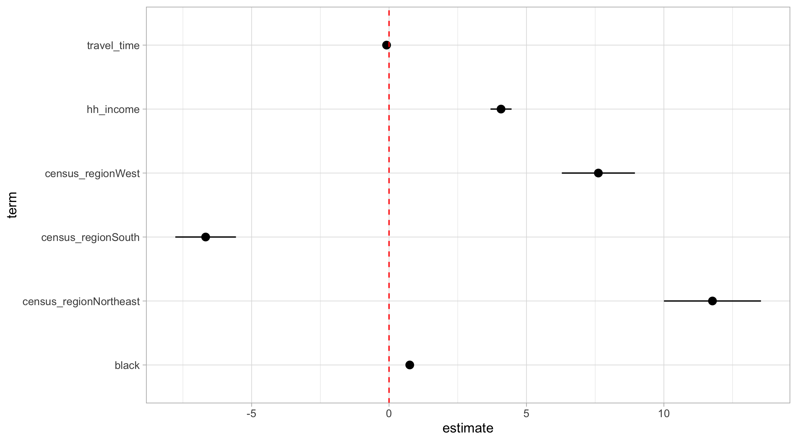
Another thing to do is to standardize the variables so that they are on the same scale: an increase of one unit for each = an increase of one standard deviation in the outcome.
elections_scale = elections |>
# scale all the numeric variables
mutate(across(where(is.numeric), scale))
mod_ols_scale = lm(per_dem_2020 ~ pop + female + black + travel_time + hh_income + census_region, data = elections_scale)
plot_model = tidy(mod_ols_scale, conf.int = TRUE)
ggplot(plot_model, aes(y = term, x = estimate, xmin = conf.low, xmax = conf.high)) +
geom_pointrange() +
# add vertical line at zero
geom_vline(xintercept = 0, lty = 2, color = "red") +
theme_light()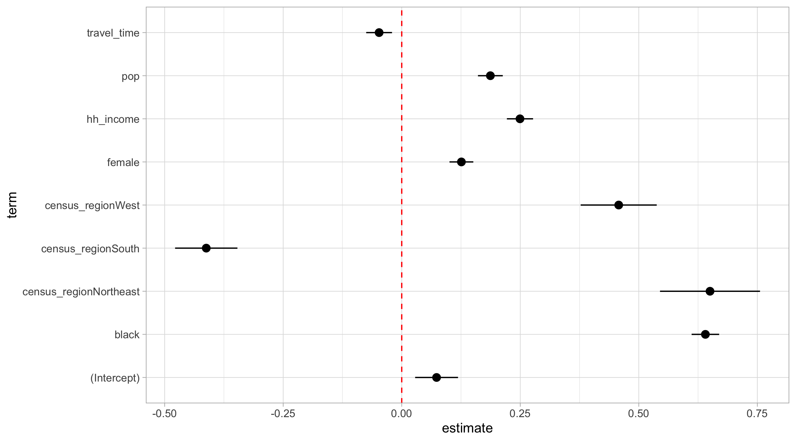
We can also combine multiple models using tidy, but need to create a variable to keep track of which is which. Then we bind the tables together.
plot_ols = mod_ols |>
tidy(conf.int = TRUE) |>
mutate(model = "OLS")
plot_logit = mod_logit |>
tidy(conf.int = TRUE) |>
mutate(model = "Logit")
bind_rows(plot_ols, plot_logit) |>
ggplot(aes(y = term, x = estimate, xmin = conf.low, xmax = conf.high,
color = model)) +
geom_pointrange(position = position_dodge(width = 0.5)) +
# add vertical line at zero
geom_vline(xintercept = 0, lty = 2, color = "red") +
theme_light()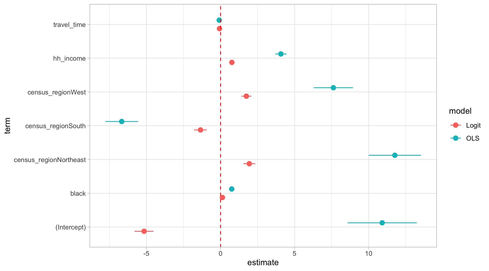
Same problems as before we would have to deal with. Honestly, I think these kind of plots are more trouble than they’re worth.
Marginal effects (linear models)
Most of the times we don’t care about all of these coefficients, we actually care about just one (our treatment variable). The rest are controls that have no causal interpretation.
With OLS, it’s simple, the marginal effect of black is the first derivative of per_dem_share with respect to black, which is just the \(\beta\) coefficient for black
\[ \begin{aligned} \operatorname{\widehat{per\_dem\_2020}} &= 10.91 + 0.75(\operatorname{black}) - 0.09(\operatorname{travel\_time}) + 4.07(\operatorname{hh\_income})\ + \\ &\quad 11.77(\operatorname{census\_region}_{\operatorname{Northeast}}) - 6.67(\operatorname{census\_region}_{\operatorname{South}}) + 7.62(\operatorname{census\_region}_{\operatorname{West}}) \end{aligned} \]
So the marginal effect of the percent of the black population on Democratic vote share is .75 \(\rightarrow\) for every percent increase in the Black population, Democratic vote share increases by .75%.
Plotting substantive effects
A nice way to convey effect magnitudes is to derive predicted values of our outcome as the variable we care about varies, holding all else constant. Three steps to this:
- fit the model
- define a scenario where our key variable varies and everything else is held at some meaningful constant value, like the mean
- plug the scenario into the model to get the estimate
We can do (2) using crossing:
avg_county = elections |>
summarise(across(c(travel_time, hh_income), ~mean(., na.rm = TRUE)))
scenario = crossing(travel_time = avg_county$travel_time,
hh_income = avg_county$hh_income,
census_region = "South",
black = seq(from = min(elections$black, na.rm = TRUE),
to = max(elections$black, na.rm = TRUE),
by = 1))
scenario# A tibble: 86 × 4
travel_time hh_income census_region black
<dbl> <dbl> <chr> <dbl>
1 23.1 4.58 South 0
2 23.1 4.58 South 1
3 23.1 4.58 South 2
4 23.1 4.58 South 3
5 23.1 4.58 South 4
6 23.1 4.58 South 5
7 23.1 4.58 South 6
8 23.1 4.58 South 7
9 23.1 4.58 South 8
10 23.1 4.58 South 9
# ℹ 76 more rowsThen it’s just a matter of plugging in these values into our regression equation. We can do this with augment():
augment(mod_ols, newdata = scenario, se_fit = TRUE)# A tibble: 86 × 6
travel_time hh_income census_region black .fitted .se.fit
<dbl> <dbl> <chr> <dbl> <dbl> <dbl>
1 23.1 4.58 South 0 20.8 0.428
2 23.1 4.58 South 1 21.6 0.417
3 23.1 4.58 South 2 22.3 0.407
4 23.1 4.58 South 3 23.1 0.397
5 23.1 4.58 South 4 23.8 0.388
6 23.1 4.58 South 5 24.6 0.380
7 23.1 4.58 South 6 25.3 0.372
8 23.1 4.58 South 7 26.1 0.364
9 23.1 4.58 South 8 26.8 0.357
10 23.1 4.58 South 9 27.6 0.351
# ℹ 76 more rowsWhich we can then plot:
pdat = augment(mod_ols, newdata = scenario, se_fit = TRUE) |>
mutate(ymin = .fitted - .se.fit * 1.96,
ymax = .fitted + .se.fit * 1.96)
ggplot(pdat, aes(x = black, y = .fitted)) +
geom_line(color = "blue") +
geom_ribbon(aes(ymin = ymin, ymax = ymax), alpha = .5, fill = "blue") +
theme_light()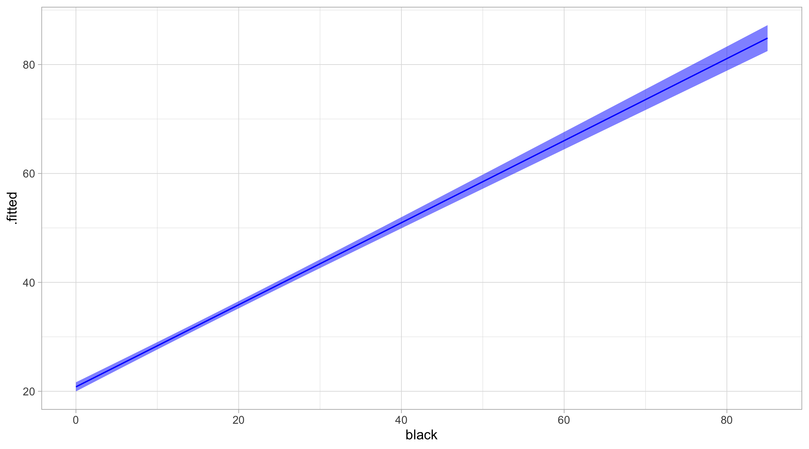
Can do the same with ggeffects::ggpredict, but good to know what’s going on:
ggeffects::ggpredict(mod_ols, terms = c("black[0:85]")) |>
plot()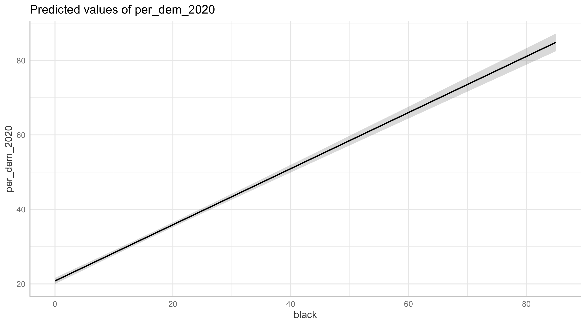
Non-linear models
Marginal effects plots
With non-linear models, things are more complicated. The effect of a variable now depends on the value of another. Take our interaction model, mod_inter.
\[ \begin{aligned} \operatorname{\widehat{per\_dem\_2020}} &= 11.04 + 1.28(\operatorname{black}) - 0.13(\operatorname{travel\_time}) + 3.94(\operatorname{hh\_income})\ + \\ &\quad 12.24(\operatorname{census\_region}_{\operatorname{Northeast}}) - 4.55(\operatorname{census\_region}_{\operatorname{South}}) + 6.05(\operatorname{census\_region}_{\operatorname{West}}) - 0.33(\operatorname{black} \times \operatorname{census\_region}_{\operatorname{Northeast}})\ - \\ &\quad 0.57(\operatorname{black} \times \operatorname{census\_region}_{\operatorname{South}}) + 1.36(\operatorname{black} \times \operatorname{census\_region}_{\operatorname{West}}) \end{aligned} \]
The marginal effect of black on per_dem_2020 is now no longer \(\beta_1 = 1.28\), it is:
\[ \begin{aligned} &1.28(\operatorname{black}) - 0.33(\operatorname{black} \times \operatorname{census\_region}_{\operatorname{Northeast}})\ -\\ &\quad 0.57(\operatorname{black} \times \operatorname{census\_region}_{\operatorname{South}}) + 1.36(\operatorname{black} \times \operatorname{census\_region}_{\operatorname{West}}) \end{aligned} \]
In other words, the effect of the Black share of the population depends on what region we are in.
The magnitude of the effect is easy, just plug in 0s and 1s.
- the effect of
blackin the Northeast = \(1.28 - 0.33 + 0 + 0 = 0.95\) - the effect of
blackin the West = \(1.28 - 0 + 0 + 1.36 = 2.64\)
The standard error for these effects or slopes is harder to calculate / requires formulas.
One thing we can do is show how the effect of black varies across census regions. The plot_slopes function from marginaleffects can do this nicely:
marginaleffects::plot_slopes(mod_inter, variables = "black", condition = "census_region") +
labs(x = "census region", y = "effect of `black`")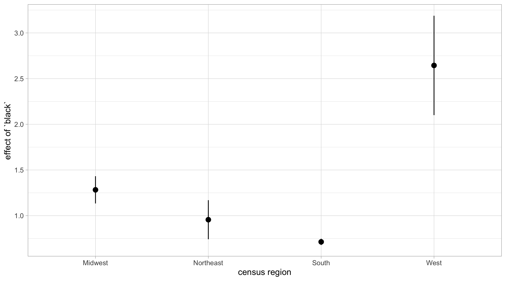
These show us how the effect of a variable varies across conditions, which is valuable for theory-testing. The y-axis here is the coefficient of black.
Predicted values
A different approach is to show what values of the outcome variable we should expect to see in different scenarios. These are the predicted values. We follow the same pattern as with the linear model, we first define a scenario:
scenario = crossing(travel_time = avg_county$travel_time,
hh_income = avg_county$hh_income,
census_region = c("South", "West", "Northeast", "Midwest"),
black = seq(from = min(elections$black, na.rm = TRUE),
to = max(elections$black, na.rm = TRUE),
by = 1))
scenario# A tibble: 344 × 4
travel_time hh_income census_region black
<dbl> <dbl> <chr> <dbl>
1 23.1 4.58 Midwest 0
2 23.1 4.58 Midwest 1
3 23.1 4.58 Midwest 2
4 23.1 4.58 Midwest 3
5 23.1 4.58 Midwest 4
6 23.1 4.58 Midwest 5
7 23.1 4.58 Midwest 6
8 23.1 4.58 Midwest 7
9 23.1 4.58 Midwest 8
10 23.1 4.58 Midwest 9
# ℹ 334 more rowsNotice how here census_region also varies now, since it’s value matters for black.
pdat = augment(mod_inter, newdata = scenario, se_fit = TRUE) |>
mutate(ymin = .fitted - .se.fit * 1.96,
ymax = .fitted + .se.fit * 1.96)
pdat# A tibble: 344 × 8
travel_time hh_income census_region black .fitted .se.fit ymin ymax
<dbl> <dbl> <chr> <dbl> <dbl> <dbl> <dbl> <dbl>
1 23.1 4.58 Midwest 0 26.1 0.418 25.3 26.9
2 23.1 4.58 Midwest 1 27.4 0.388 26.6 28.1
3 23.1 4.58 Midwest 2 28.6 0.371 27.9 29.4
4 23.1 4.58 Midwest 3 29.9 0.369 29.2 30.6
5 23.1 4.58 Midwest 4 31.2 0.383 30.5 32.0
6 23.1 4.58 Midwest 5 32.5 0.411 31.7 33.3
7 23.1 4.58 Midwest 6 33.8 0.449 32.9 34.7
8 23.1 4.58 Midwest 7 35.1 0.497 34.1 36.0
9 23.1 4.58 Midwest 8 36.3 0.551 35.3 37.4
10 23.1 4.58 Midwest 9 37.6 0.610 36.4 38.8
# ℹ 334 more rowsggplot(pdat, aes(x = black, y = .fitted, ymin = ymin, ymax = ymax,
color = census_region)) +
geom_line() +
geom_ribbon(alpha = .5, aes(fill = census_region))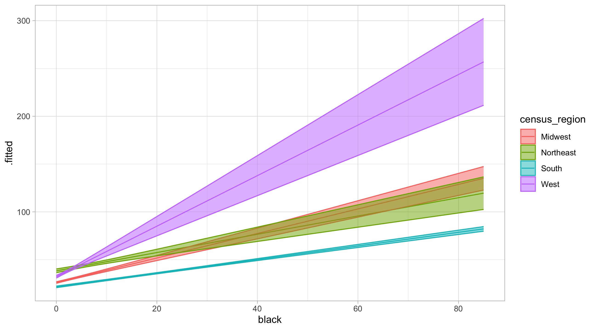
Or:
ggplot(pdat, aes(x = black, y = .fitted, ymin = ymin, ymax = ymax,
color = census_region)) +
geom_line() +
geom_ribbon(alpha = .5, aes(fill = census_region)) +
facet_wrap(vars(census_region))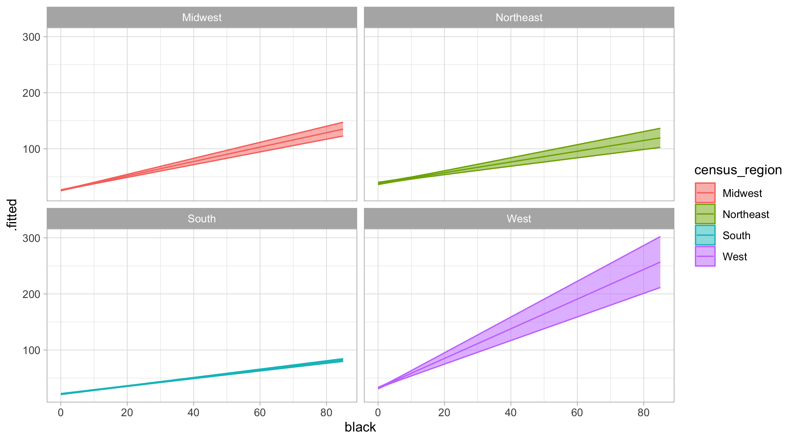
Comparing to the simple plot is instructive:
ggplot(elections, aes(x = black, y = per_dem_2020, color = census_region)) +
geom_point() +
geom_smooth(method = "lm")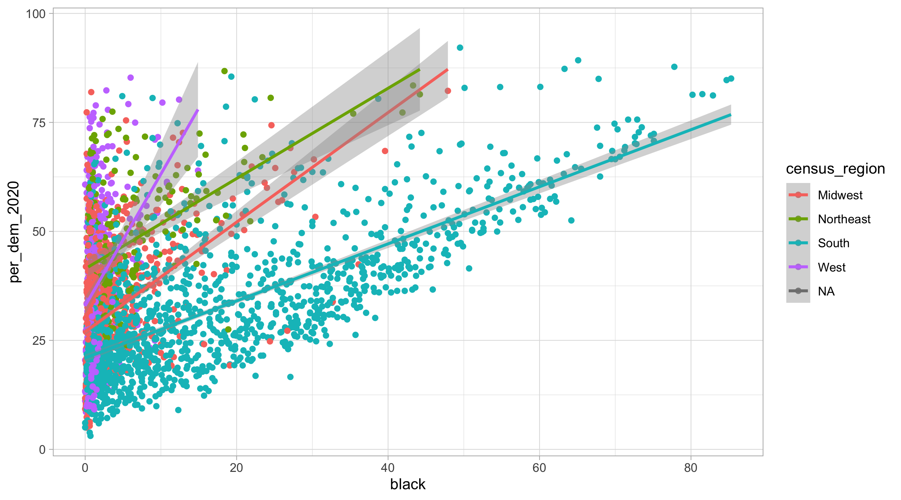
Non-linear models: logit
Some models are non-linear not because of interactions in the data but because they use non-linear transformations of the data. Logit is one example of this. Look at our mod_logit:
\[ \begin{aligned} \log\left[ \frac { \widehat{P( \operatorname{dems\_win\_20} = \operatorname{1} )} }{ 1 - \widehat{P( \operatorname{dems\_win\_20} = \operatorname{1} )} } \right] &= -5.16 + 0.13(\operatorname{black}) - 0.07(\operatorname{travel\_time}) + 0.76(\operatorname{hh\_income})\ + \\ &\quad 1.94(\operatorname{census\_region}_{\operatorname{Northeast}}) - 1.35(\operatorname{census\_region}_{\operatorname{South}}) + 1.74(\operatorname{census\_region}_{\operatorname{West}}) \end{aligned} \]
If we look at the output, it’s in log-odds:
mod_logit |> tidy()# A tibble: 7 × 5
term estimate std.error statistic p.value
<chr> <dbl> <dbl> <dbl> <dbl>
1 (Intercept) -5.16 0.327 -15.8 4.62e-56
2 black 0.126 0.00635 19.8 3.98e-87
3 travel_time -0.0712 0.0135 -5.28 1.26e- 7
4 hh_income 0.765 0.0555 13.8 3.09e-43
5 census_regionNortheast 1.94 0.203 9.55 1.31e-21
6 census_regionSouth -1.35 0.218 -6.20 5.55e-10
7 census_regionWest 1.74 0.167 10.4 2.25e-25These coefficients are on the log-odds scale. Some people will exponentiate these to get odds ratios but those are uninterpretible to me:
mod_logit |>
tidy() |>
mutate(estimate = exp(estimate))# A tibble: 7 × 5
term estimate std.error statistic p.value
<chr> <dbl> <dbl> <dbl> <dbl>
1 (Intercept) 0.00574 0.327 -15.8 4.62e-56
2 black 1.13 0.00635 19.8 3.98e-87
3 travel_time 0.931 0.0135 -5.28 1.26e- 7
4 hh_income 2.15 0.0555 13.8 3.09e-43
5 census_regionNortheast 6.96 0.203 9.55 1.31e-21
6 census_regionSouth 0.259 0.218 -6.20 5.55e-10
7 census_regionWest 5.71 0.167 10.4 2.25e-25With logit, I think marginal effects plots are most useful. Same as before, define a scenario where the variable we care about varies and everything else stays the same:
scenario = crossing(travel_time = avg_county$travel_time,
hh_income = avg_county$hh_income,
census_region = "South",
black = seq(from = min(elections$black, na.rm = TRUE),
to = max(elections$black, na.rm = TRUE),
by = 1))
scenario# A tibble: 86 × 4
travel_time hh_income census_region black
<dbl> <dbl> <chr> <dbl>
1 23.1 4.58 South 0
2 23.1 4.58 South 1
3 23.1 4.58 South 2
4 23.1 4.58 South 3
5 23.1 4.58 South 4
6 23.1 4.58 South 5
7 23.1 4.58 South 6
8 23.1 4.58 South 7
9 23.1 4.58 South 8
10 23.1 4.58 South 9
# ℹ 76 more rowsWe then get predictions:
pdat = augment(mod_logit, newdata = scenario, se_fit = TRUE) |>
mutate(lo95 = .fitted - 1.96 * .se.fit,
hi95 = .fitted + 1.96 * .se.fit,
.fitted = .fitted)
pdat# A tibble: 86 × 8
travel_time hh_income census_region black .fitted .se.fit lo95 hi95
<dbl> <dbl> <chr> <dbl> <dbl> <dbl> <dbl> <dbl>
1 23.1 4.58 South 0 -4.66 0.213 -5.07 -4.24
2 23.1 4.58 South 1 -4.53 0.208 -4.94 -4.12
3 23.1 4.58 South 2 -4.40 0.202 -4.80 -4.01
4 23.1 4.58 South 3 -4.28 0.197 -4.66 -3.89
5 23.1 4.58 South 4 -4.15 0.191 -4.53 -3.78
6 23.1 4.58 South 5 -4.03 0.186 -4.39 -3.66
7 23.1 4.58 South 6 -3.90 0.181 -4.26 -3.55
8 23.1 4.58 South 7 -3.78 0.175 -4.12 -3.43
9 23.1 4.58 South 8 -3.65 0.170 -3.98 -3.32
10 23.1 4.58 South 9 -3.53 0.165 -3.85 -3.20
# ℹ 76 more rowsNotice these predictions are on the log-odd scale:
ggplot(pdat, aes(x = black, y = .fitted, ymin = lo95, ymax = hi95)) +
geom_line() +
geom_ribbon(alpha = .4)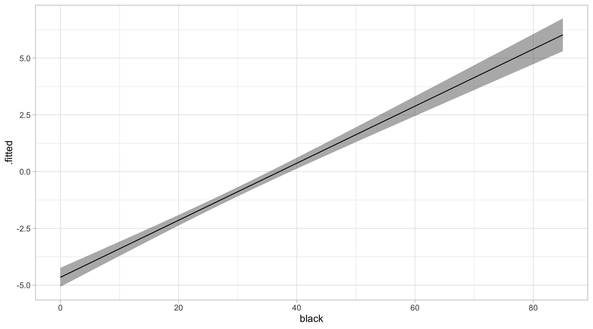
Notice that on the log-odds scale, the effect of black is linear.
To get to meaningful values we gotta “reverse” the log-odds, which is done by: \(\frac{1}{(1 + e^{-x})}\)
So:
pdat = augment(mod_logit, newdata = scenario, se_fit = TRUE) |>
mutate(lo95 = arm::invlogit(.fitted - 1.96 * .se.fit),
hi95 = arm::invlogit(.fitted + 1.96 * .se.fit),
.fitted = arm::invlogit(.fitted))
pdat# A tibble: 86 × 8
travel_time hh_income census_region black .fitted .se.fit lo95 hi95
<dbl> <dbl> <chr> <dbl> <dbl> <dbl> <dbl> <dbl>
1 23.1 4.58 South 0 0.00941 0.213 0.00622 0.0142
2 23.1 4.58 South 1 0.0107 0.208 0.00712 0.0159
3 23.1 4.58 South 2 0.0121 0.202 0.00815 0.0178
4 23.1 4.58 South 3 0.0137 0.197 0.00933 0.0200
5 23.1 4.58 South 4 0.0155 0.191 0.0107 0.0223
6 23.1 4.58 South 5 0.0175 0.186 0.0122 0.0250
7 23.1 4.58 South 6 0.0198 0.181 0.0140 0.0280
8 23.1 4.58 South 7 0.0224 0.175 0.0160 0.0313
9 23.1 4.58 South 8 0.0253 0.170 0.0183 0.0350
10 23.1 4.58 South 9 0.0286 0.165 0.0209 0.0391
# ℹ 76 more rowsPlot:
ggplot(pdat, aes(x = black, y = .fitted)) +
geom_line() +
geom_ribbon(aes(ymin = lo95, ymax = hi95), alpha = .4)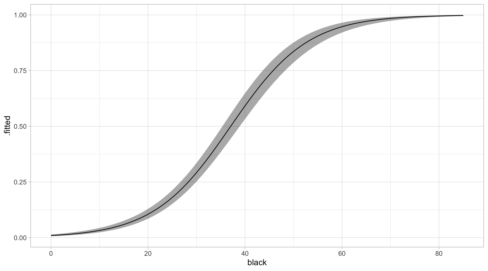
We can do the same with ggpredict, but its good to know what’s happening:
ggeffects::ggpredict(mod_logit, terms = "black [0:85]") |> plot()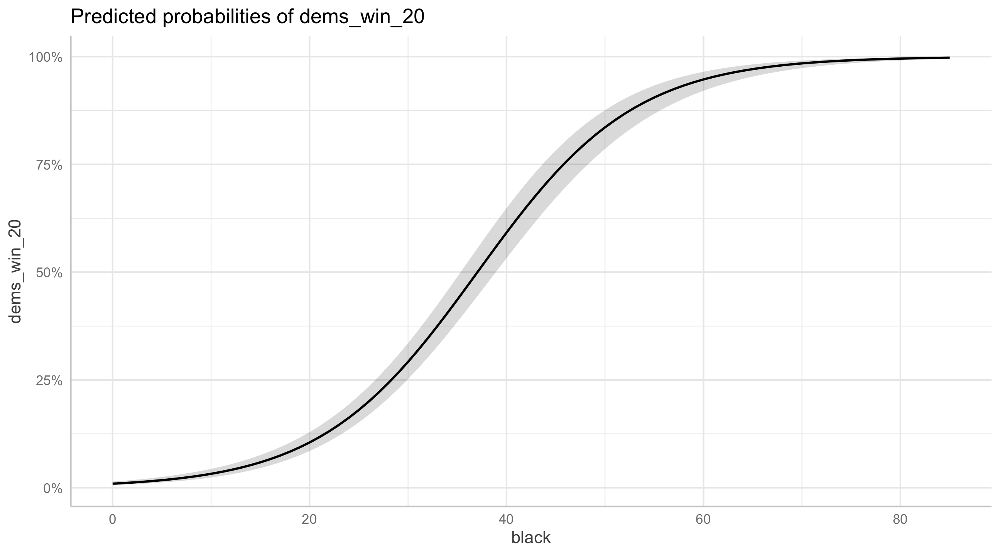
A useful approach with these kind of plots is to pick meaningful scenarios and compare them. How much more likely is the average town in the South, with 60% Black population to vote for Democrats than the same town with 30% Black population?
scenario = crossing(travel_time = avg_county$travel_time,
hh_income = avg_county$hh_income,
census_region = "South",
black = c(60, 30))
augment(mod_logit, newdata = scenario, se_fit = TRUE) |>
mutate(lo95 = arm::invlogit(.fitted - 1.96 * .se.fit),
hi95 = arm::invlogit(.fitted + 1.96 * .se.fit),
.fitted = arm::invlogit(.fitted))# A tibble: 2 × 8
travel_time hh_income census_region black .fitted .se.fit lo95 hi95
<dbl> <dbl> <chr> <dbl> <dbl> <dbl> <dbl> <dbl>
1 23.1 4.58 South 30 0.292 0.103 0.252 0.335
2 23.1 4.58 South 60 0.947 0.220 0.921 0.965Other non-linear terms
Sometimes we think the relationship between one variable and another is non-linear:
gapminder = gapminder |>
mutate(gdpPercap = gdpPercap / 10000)
mod_non = lm(lifeExp ~ gdpPercap + I(gdpPercap^2), data = gapminder)
tidy(mod_non)# A tibble: 3 × 5
term estimate std.error statistic p.value
<chr> <dbl> <dbl> <dbl> <dbl>
1 (Intercept) 50.5 0.298 170. 0
2 gdpPercap 15.5 0.374 41.5 1.29e-260
3 I(gdpPercap^2) -1.50 0.0579 -25.9 3.94e-125In practice, this looks like this:
ggplot(gapminder, aes(x = gdpPercap, y = lifeExp)) +
geom_point() +
stat_smooth(method = "lm", formula = y ~ x + I(x^2))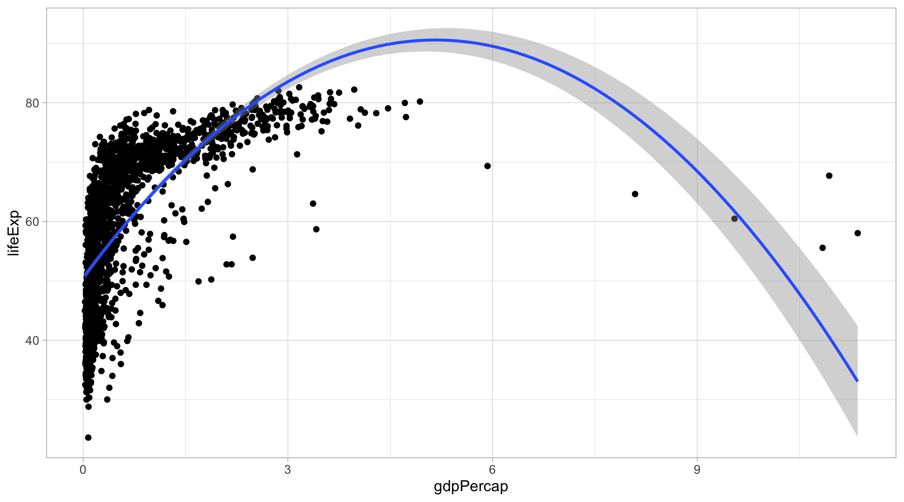
This is another situation where the effect of X on Y depends on another variable – but in this case, itself:
\[ \begin{aligned} \operatorname{\widehat{lifeExp}} &= 50.52 + 15.51(\operatorname{gdpPercap}) - 1.5(\operatorname{gdpPercap^{2}}) \end{aligned} \]
The first derivative equals:
\(\frac{dy}{dx} = -2 \times 1.5(gdpPercap)\)
Depending on the value of GDP, the effect of additional GDP could be zero, negative, or positive.
In these situations, I think the marginal effect or slope plot is very useful:
marginaleffects::plot_slopes(mod_non, variables = "gdpPercap",
condition = "gdpPercap") +
labs(x = "GDP per capita", y = "effect of `gdpPercap`")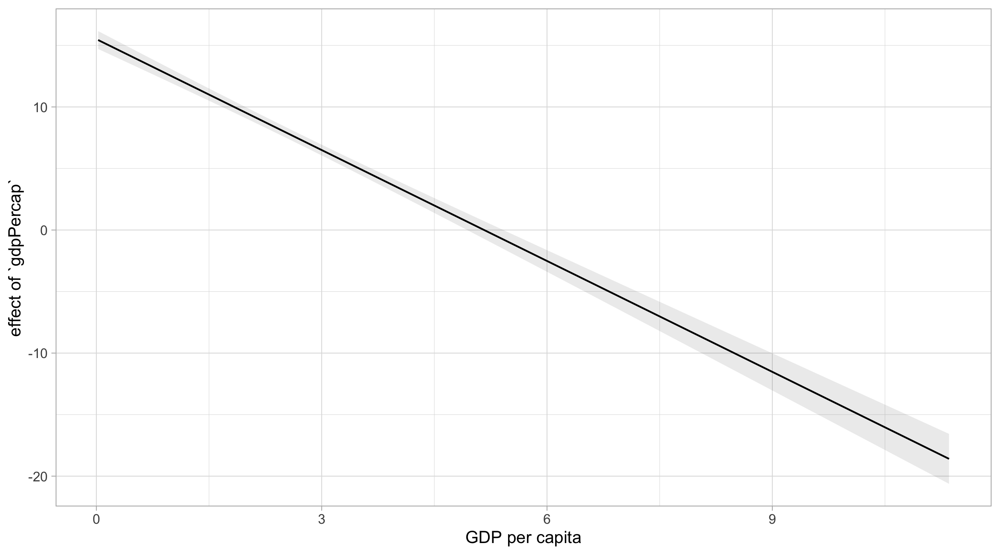
log-transformed DV
When you log-transform a DV, things also change. We log transform when we have a DV that only takes on positive numbers, and/or when we expect that
mod_log = lm(log(lifeExp) ~ gdpPercap, data = gapminder)\[ \begin{aligned} \operatorname{\widehat{log(lifeExp)}} &= 3.97 + 0.13(\operatorname{gdpPercap}) \end{aligned} \]
The model is being fit to the DV on the log-scale. To get back to the regular scale we can exponentiate both sides:
\[ \begin{aligned} \operatorname{\widehat{lifeExp}} &= e^{3.97 + 0.13(\operatorname{gdpPercap})} \end{aligned} \]
The first derivative of \(\frac{dy}{dx} = 6.82 \times e^{(0.13 \times gdpPercap)}\)
So the slope of GDP depends on its own value:
- when GDP = 0, the slope of GDP = \(6.82 \times e^{(0.13 \times 0)} = 6.82\)
- when GDP = 1, the slope of GDP = \(6.82 \times e^{(0.13 \times 1)} = 7.76\)
Let’s see how this works with prediction.
Define scenario:
scenario = crossing(gdpPercap = seq(0, 10, by = .5))Predictions:
preds = augment(mod_log, newdata = scenario, se_fit = TRUE) |>
mutate(lo95 = .fitted - 1.96 * .se.fit,
hi95 = .fitted + 1.96 * .se.fit)
preds# A tibble: 21 × 5
gdpPercap .fitted .se.fit lo95 hi95
<dbl> <dbl> <dbl> <dbl> <dbl>
1 0 3.97 0.00583 3.96 3.98
2 0.5 4.03 0.00483 4.02 4.04
3 1 4.10 0.00489 4.09 4.11
4 1.5 4.16 0.00600 4.15 4.17
5 2 4.22 0.00771 4.21 4.24
6 2.5 4.29 0.00971 4.27 4.31
7 3 4.35 0.0119 4.33 4.38
8 3.5 4.42 0.0141 4.39 4.45
9 4 4.48 0.0164 4.45 4.52
10 4.5 4.55 0.0187 4.51 4.58
# ℹ 11 more rowsNotice these predictions are on the log-scale and that the effect of GDP is linear in the log-scale:
ggplot(preds, aes(x = gdpPercap, y = .fitted,
ymin = lo95, ymax = hi95)) +
geom_line() +
geom_ribbon(alpha = .4)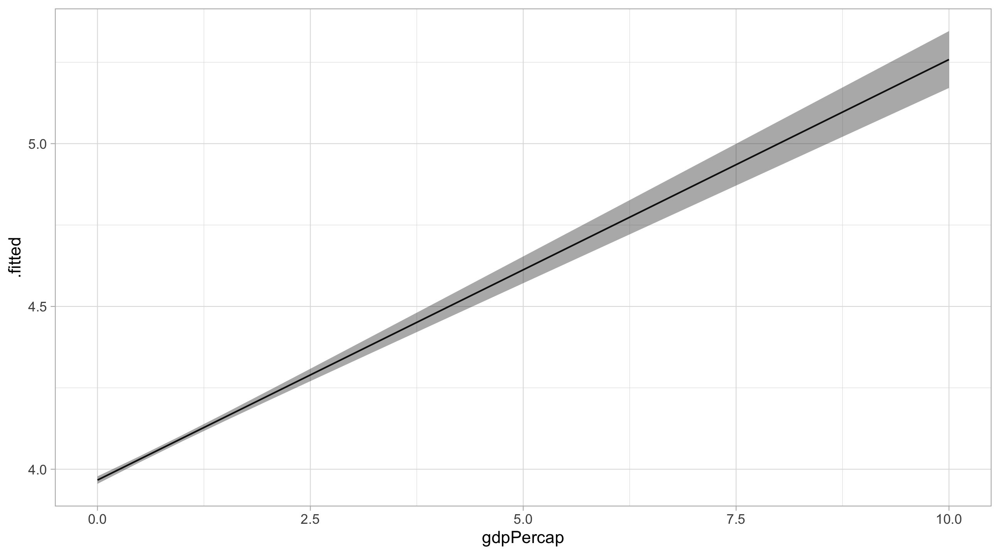
To get back to regular life expectancy in years we just exponentiate:
preds |>
mutate(lo95 = exp(.fitted - 1.96 * .se.fit),
hi95 = exp(.fitted + 1.96 * .se.fit),
.fitted = exp(.fitted)) |>
ggplot(aes(x = gdpPercap, y = .fitted)) +
geom_line() +
geom_ribbon(aes(ymin = lo95, ymax = hi95), alpha = .4)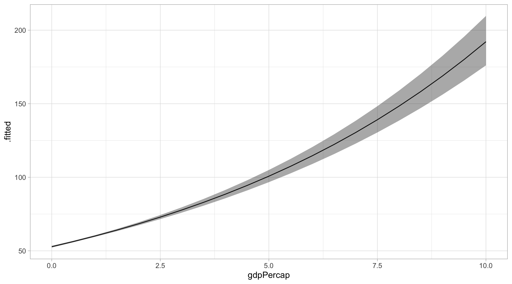